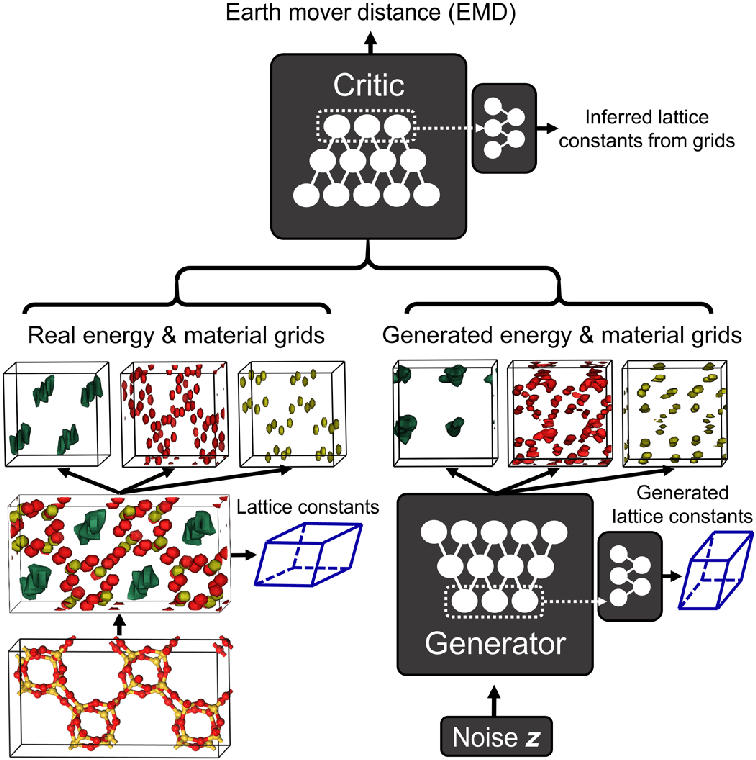

2 Literature Review
Global warming and climate change have become immediate concerns that have led to a fuel crisis and a surge of research and development to solve these concerns through other alternatives as well as new age technology. It is not only important to discover better methods of capturing greenhouse gases, but also critical to uncover and develop new technologies to create better alternatives for the fuel economy.
New development of methods in Machine Learning and Artificial Intelligence have made significant impact in chemistry and physics, which have considerably progressed human understanding of the environmental challenges and potential ways to alleviate it.
One such development is zeolites, which offer an efficient and relatively inexpensive solution for reducing methane emissions, which has been identified by various climate negotiations as a major priority to quickly curbing global climate change (Chandler, 2022).
ZeoGAN is a newly-developed machine learning algorithm that generates these new zeolite structures and energy spaces based on known zeolites for inorganic solids materials design. It offers potential to solve many different energy and environmental related challenges.
2.1 Zeolite
Zeolites hold the promise of a solution to many of the environmental issues facing our world, including but not limited to methane and carbon dioxide capture and storage. A team of researchers at MIT discovered treating zeolite clays, an inexpensive material currently used to make cat litter, with a small amount of copper makes it extremely effective at absorbing methane gas, even at extremely low concentrations (Chandler, 2022).
Zeolites are crystalline solids structures made primarily of silicon (or aluminum) and oxygen that form a structure with pores or cavaties and channels where water and/or small molecules can be captured. One defining feature of zeolites is that their structures are made up of SiO4 (or AlO4) tetrahedra linked to each other through oxygen atoms to form its porous structure (Chandler, 2022).
They can occur naturally as minerals, but most zeolite structures have been synthetically made for commercial use or for scientific research. Currently, there are 191 unique zeolite structures identified and over 40 naturally occuring zeolites known. Originally introduced as an adsorbents for industrial separations and purification, zeolites are now used for a variety of purposes, such as petrochemical cracking, water purification, separation and removal or gases and solvents, agriculture, and construction (Chandler, 2022).
Zeolites’ porous molecular structure, relatively large surface area and ability to host copper and iron make them promising catalysts for capturing methane and other gases (Jordan, 2019). The current basic system for capturing methane and other gases is quite simple in concept. The idea is to have a packed chamber of tiny particles of zeolite material infused with copper, which is then heated from the outside as a stream of methane gas flows through the chamber.
In the research conducted at MIT, methane levels ranged from 2 parts per million up to 2 percent concentration to account for everythhing that might exist in the atmosphere (Chandler, 2022). The researchers found that peak effectiveness of the process was when the chamber, or reaction tube, was heated to 300 degrees Celsius, which actually requires far less energy for heating than other methane capture processes.
This process of using zeolites has several advantages over other existing approaches to capturing and removing methane. (1) It is a much cheaper alternative to other more expensive catalysts such as platinum. (2) It requires significantly lower temperatures and energy, whereas other catalysts require at least 600 degrees Celsius. (3) Zeolites require a more simplistic methadology for extracting methane. Current catalysts require complex cycling between methane and oxygen streams, making them complicated and dangerous since methane and oxygen are highly combustible on their own and together (Chandler, 2022).
2.2 ZeoGAN
Due to the complex topologies of zeolites, some might propose that these materials are especially challenging to generate using artificial neural networks (ANNs). Furthermore, other factors such as “the nonunique representation of unit cells, complex chemistry, ambiguous assignment of lattice parameters, and constraints of periodic boundary conditions” also add to the challenges in incorporating Machine Learning and ANNs for crystalline materials generation, and generation of undiscovered zeolite structures.
Generative adversarial networks, or GANs, offer a solution to these challenges through its “enhanced capability in generating realistic objects such as human faces” (B. Kim et al., 2020a). Using deep learning methods, such as convolutional neural networks. This modeling technique is an unsupervised learning task that involves automatic detection and learning of regularities or patterns in the input data to generate new examples that could plausibly come from the original training data.
GANs consist of both a discriminator and a generator, where the generator creates realistic undiscovered objects based on the input data and the discriminator differentiates between the real and fake images. The goal is for the discriminator to improve its differentiation, while the generator progressively improves its newly generated objects to deceive the discriminator (B. Kim et al., 2020a). This basic workflow facilitates adversarial learning where realistic objects are generated with the improvement in the GAN’s learning process.
A team of researchers in Korea developed a new type of generative adversarial network (GAN) named zeolite GAN, or ZeoGAN, built for the purpose of generating new potential zeolite materials and energy shapes (B. Kim et al., 2020a). For faster generation of the training set, the energy dimensions of ZeoGAN are set to be the methane potential energy and facile creation of methane energy grids using classical molecular simulations (B. Kim et al., 2020a). Their selection and this research study’s reason for selecting methane is described in Section 2.3. Though this particular study also focused on methane, ZeoGAN, in practice, can easily be modified for other gas molecules, such as carbon dioxide since only the selection of gas molecules within the classical molecular simulations would need to be changed (B. Kim et al., 2020a)

Figure 2.1 offers some insight into the overall schematics of how ZeoGAn works. The input to the generator is divided into the materials grid, which is further subdivided into silicon and oxygen atom grids, and the energy grids constructed using classical molecular simulations (B. Kim et al., 2020a). The size of all three of the grids is set to be 32x32x32 points in fractional coordinates, where the three-dimensional lattice vectors are divided by 32 (B. Kim et al., 2020a). Hence, the fractional coordinates were meant to maintain the same grid size for all of the zeolite structures and the number of points were selected to maintain smaller memory and storage costs for faster a learning process (B. Kim et al., 2020a). For each 32x32x32 grid points, a methane molecule was simulated to calculate the interaction energies between it and the silicon and oxygen atoms (B. Kim et al., 2020a).
The positions of the silicon and oxygen atoms are represented by normal Gaussian functions with the same amplitude of 1.0 and variance of 0.5, where the peak of the functions correspond to the positions of atoms (B. Kim et al., 2020a). The entirety of the grids, including silicon, oxygen, and methane potential, are combined into one tensor that is used as an input for ZeoGAN (B. Kim et al., 2020a). Then, ZeoGAN trains itself to generate realistic tensors that resembles tensors calculated from the input, real zeolites. This research, and the present study, will use 234 zeolites from International Zeolites Association (IZA) experimental structures and 331,163 from Predicted Crystallography Open Database (PCOD) hypothetical zeolites to train the neural netowrks in ZeoGAN (B. Kim et al., 2020a).
2.3 Why Methane?
Methane is one of the most prioritized greenhouse gases. It is the second most abundant greenhouse gas after carbon dioxide. Concentrations of methane emissions have grown more than twice as fast as carbon dioxide due to human-related activities since the Industrial Revolution and is 81 times more potent at trapping heat in its first 20 years of release (Jordan, 2021).
Primary sources of methane emissions are from agriculture, waste disposal, and fossil fuel extraction. However, there are also natural sources of methane that account for 40% of global methane emissions. Focusing efforts on significantly reducing methane emissions would greatly slow the impact of global warming.
Removal of methane will lead to a decrease in air pollution and thus, improvements in air quality. Since the oxidation of methane is the primary contributor to the formation of the ozone layer in the troposphere (Jordan, 2021).
Methane also has the highest potential to solve our current fuel crisis. In comparison to other hydrocarbons, it is more environmentally friendly. In comparison to carbon dioxide, methane produces more heat and light energy per mass, while emitting significantly lower pollutants.
The recent discovery of methane clathrates, or more colloquially known as “fire ice”, are sources of high energy-intensive fuel found as an ice crystal (Yoon, 2017). Methane clathrates are formed through a combination of low temperatures and high pressure and contain locked reserves of natural methane gas. One cubic meter of the compound releases about 160 cubic meters of gas (S.-Y. Lee & Holder, 2001). These enormous deposits of methane can be found distributed throughout permafrost regions and soil microbes in wetlands with more energy stored in methane hydrates compared to the world’s oil, coal, and gas combined (Yoon, 2017). Recent efforts to convert this methane gas to energy has proven to be fruitful. Thus, despite environmental and global warming concerns, plans have been made to make methane a leading source of alternative energy in the future over other fossil fuel sources (Yoon, 2017).
Despite its high potential to slow global climate change and offer a solution to the fuel crisis, there has been a lack of development of technology for methane removal due to challenges related to its concentration and dilution being extremely low (Lackner, 2020). A known way to use methane is to convert it to methanol, a liquid form of fuel that burns more cleanly with fewer emissions. However, this conversion process requires significant heat and pressure, which generates a significant amount of carbon dioxide emissions. In addition, storage, transportation, and utilization of methane presents its own set of problems.
Methane is highly flammable and has a high risk of combustion - making it a difficult greenhouse gas to safely manipulate (Yoon, 2017). Improper handling of methane poses the danger of exacerbating current global warming issues. The current trajectory of global warming is causing the melting of permafrost regions with methane clathrates and hydrates, which could result in the release of trillions of cubic meters of methane into the atmosphere (Yoon, 2017). This risk and the current lack of existing research and resources to capture methane in a reliable and energy efficient manner makes it difficult and dangerous to handle.
New technology and research has discovered a class of crystalline, porous material capable of safely and stably soaking up, capturing, and storing methane gas called zeolites (Jordan, 2021).